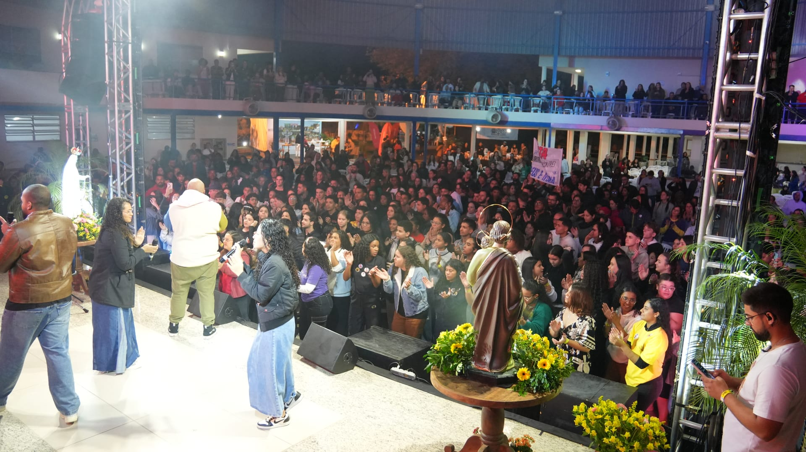

Uma noite inteira de oração com os arcanjos Miguel, Gabriel e Rafael. Acontece todo ano.
Seguir a Trilha do Amor: o maior congresso católico da região, no Centro de Formação São João Paulo II, em Itaperuna.